Agents at Scale: Inside MiniMax's Model and the Infrastructure Behind It
If you only read one thing
- MiniMax open-sourced M3, its first multimodal MiniMax model, framing open source as core to the company's mission and to Together's mission of making tokens abundant (c1, c2).
- Serving a new model requires a day-zero checklist (KV cache, attention kernels, quantization) that keeps improving week over week; agentic workloads that upload a whole codebase are a different inference challenge than chat turns (c3, c4, c5).
- Together's VP says GPU utilization remains low industry-wide, and that open models like M3 are closing the gap with frontier labs (c8, c9).
Olive Song, RL research lead at MiniMax, frames open-sourcing M3 as aligned with a mission to spread intelligence broadly and let outside developers contribute improvements back through PRs and feedback.
“community as a whole is very strong and powerful. While we open source the model, everyone can use it.”
▶ watch at 01:31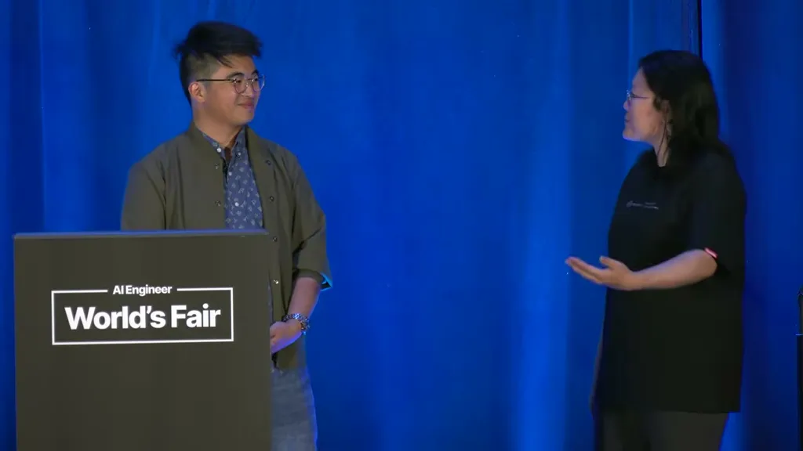
Together AI's Dan Fu describes getting early model details (including MiniMax's sparse attention implementation) before launch, then writing and benchmarking kernels. On launch day the team tracks a known list of follow-up work — KV cache handling, attention kernels, quantization — that gets optimized over the following days and weeks so the model gets measurably faster between day zero and day fourteen.
“there are things like the minimax sparse attention and and some of those choices that were a little bit different from any model that's out there”
▶ watch at 07:40“we have to do this with the KV cache, we have to do this with the attention kernels”
▶ watch at 08:43
Unlike the M2 series, M3 was trained multimodal from step zero on both text and image data rather than having modality added later, which the team says avoided the model collapse other labs reportedly see when adding modalities post hoc, and produced attention maps where text and visual tokens attend to each other naturally.
“it not only understands text and it not only writes code, it also understands videos and images”
▶ watch at 04:06“it was trained multimodal from scratch. So, from step zero, we trained not only text data, we also trained image data”
▶ watch at 10:47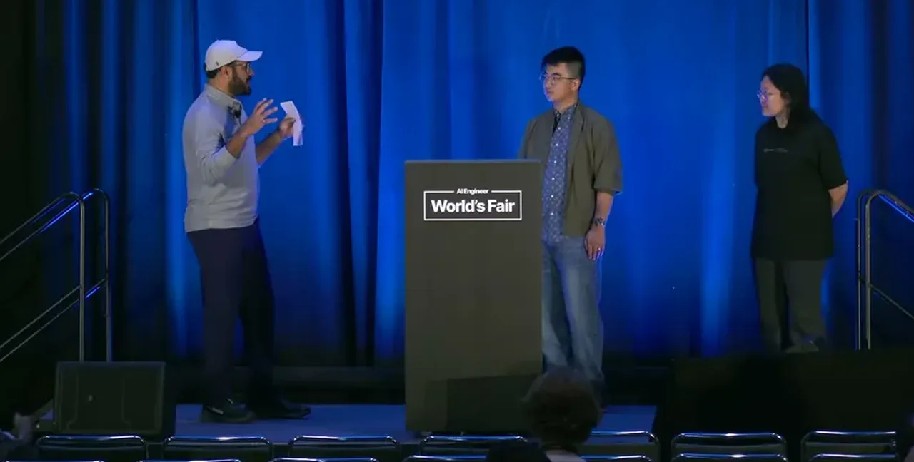
Fu says the shift from chat-turn workloads to agentic workloads — where a harness uploads an entire codebase and makes hundreds of multi-turn tool calls — changes what parts of the inference stack (KV cache, prompting, routing) are worth optimizing. He describes the optimization approach as exhaustive: pursuing every available edge without stopping at a fixed list.
“you'll upload your whole code base to the model, and that's a very different optimization and routing and kernel challenge than than just the the chat base workload”
▶ watch at 09:45“there's no stone that you leave unturned and you just uh keep keep going at it”
▶ watch at 11:48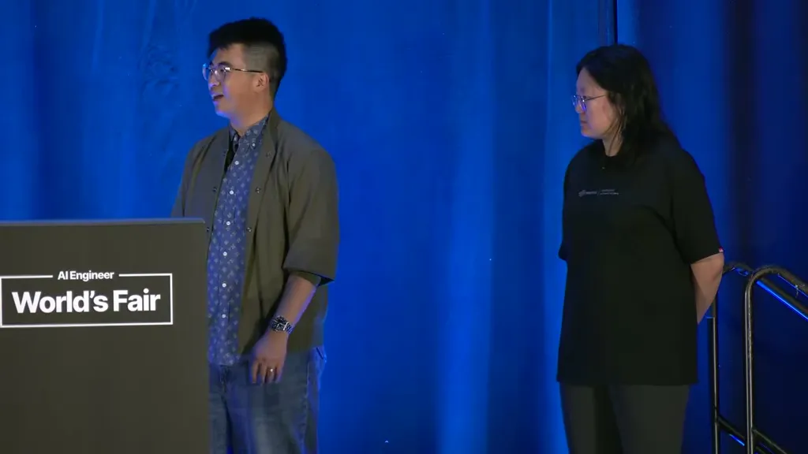
Fu says the industry still underutilizes GPUs broadly, citing SpaceX's reported ~10% flop utilization as a comparison point, and separately argues that open-source models like M3, GLM, and Kimi are catching up to closed frontier labs and are not far behind.
“some things that I hope for, so I think we underutilize our GPUs a lot right now”
▶ watch at 17:32“the open-source frontier really can catch up. Um and and it's it's not even that far behind”
▶ watch at 18:34
Commentary (ours)
(ours) The specific day-zero list (KV cache, attention kernels, quantization) is a more checkable claim than the general "we optimize continuously" framing common to serving-provider talks; it gives a concrete list to ask a vendor about when evaluating serving partners for a new open-weight model.

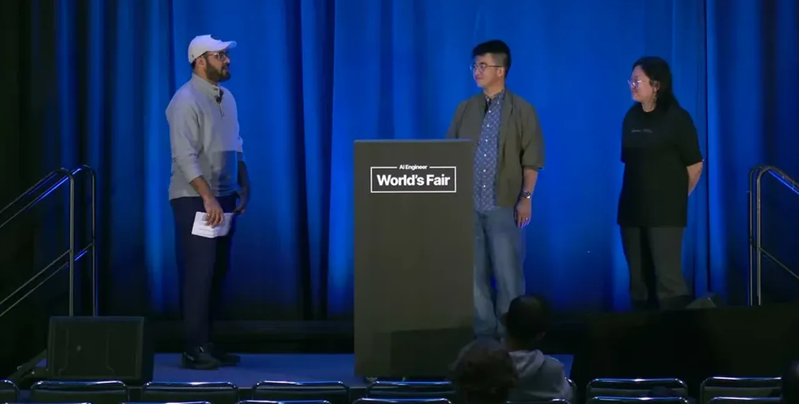
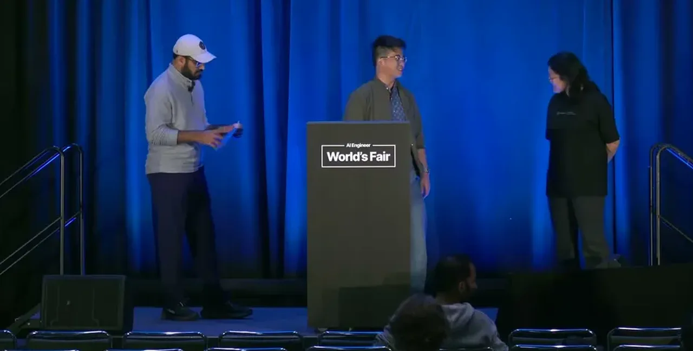
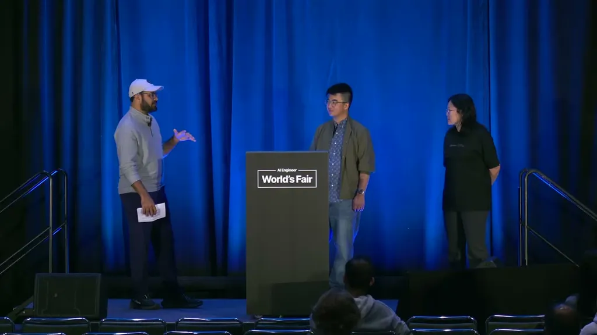
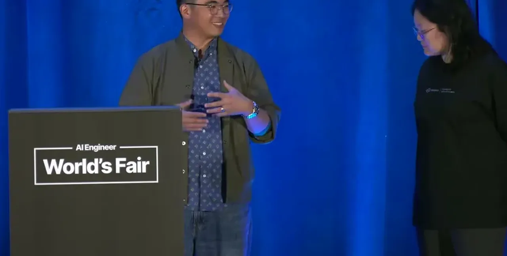
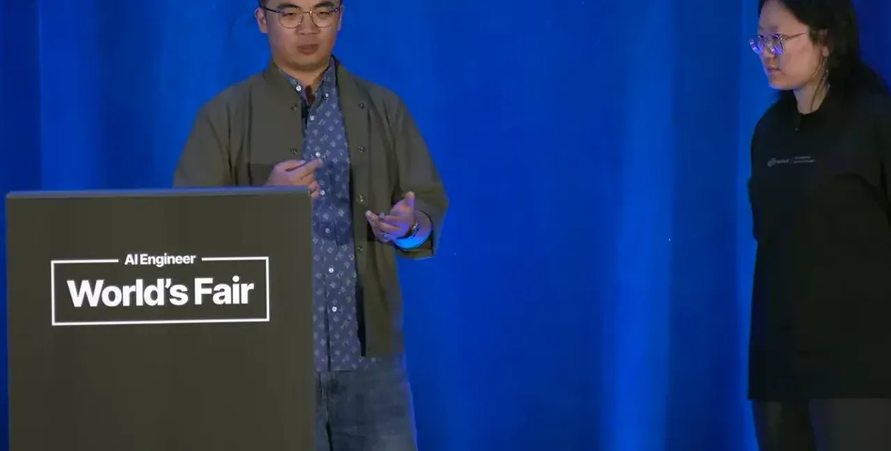
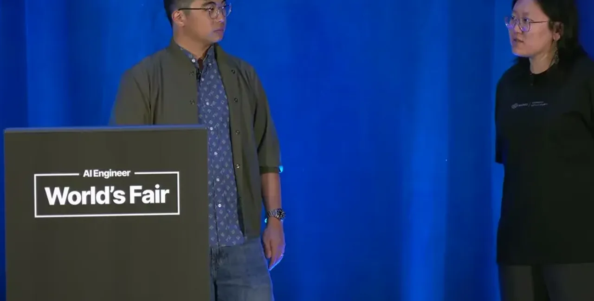
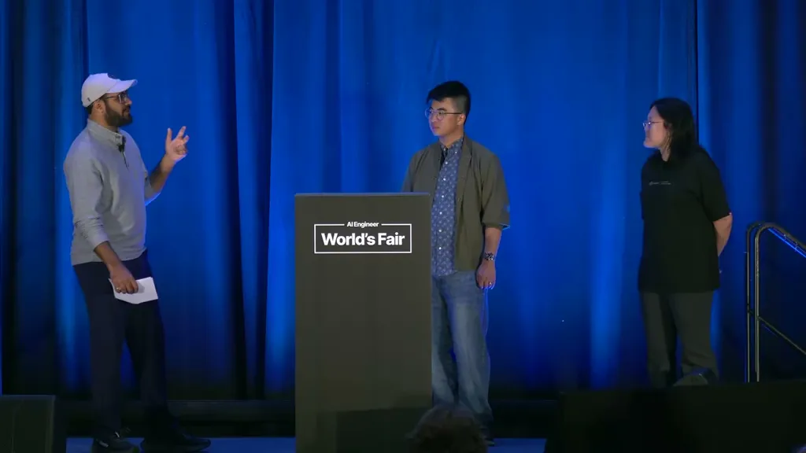
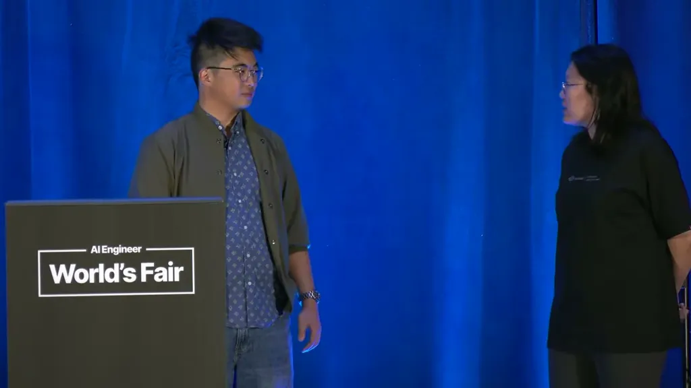
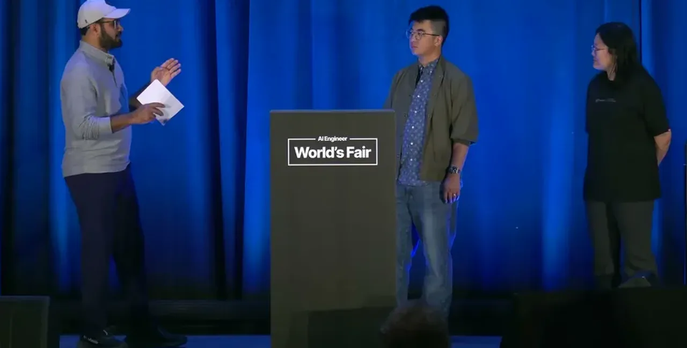
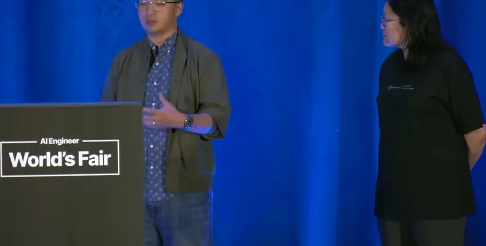


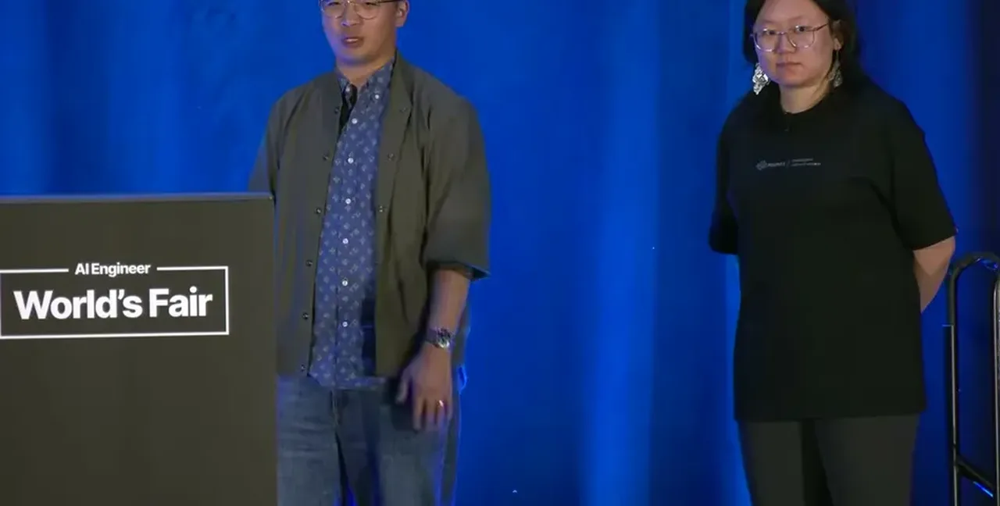


Underlying detail — every claim, typed and timestamped (9)
| Stance | Claim | t |
|---|---|---|
| asserts | MiniMax frames open-sourcing M3 as aligned with a mission to spread intelligence and let outside developers contribute improvements. | 01:31 |
| asserts | M3 differs from the M2 series in that it understands video and images in addition to text and code. | 04:06 |
| asserts | M3 introduced MiniMax's own sparse-attention design, which differs from other open models' attention choices. | 07:40 |
| asserts | On launch day, Together tracks a known list of follow-up optimization work, including KV cache handling and attention kernels. | 08:43 |
| asserts | Agentic coding workloads, which upload an entire codebase to the model, require different optimization, routing, and kernel choices than chat-turn workloads. | 09:45 |
| asserts | M3 was trained multimodal from the very first training step rather than having a modality added later. | 10:47 |
| asserts | Together's approach to inference optimization is to pursue every available edge without stopping at a fixed list of items. | 11:48 |
| warns | GPU utilization remains low across the industry, comparable to figures reported for SpaceX. | 17:32 |
| predicts | Open-source models are catching up to closed frontier labs and are not far behind. | 18:34 |
Machine-readable copy embedded in this page (script#ontology) and in the corpus ontology.